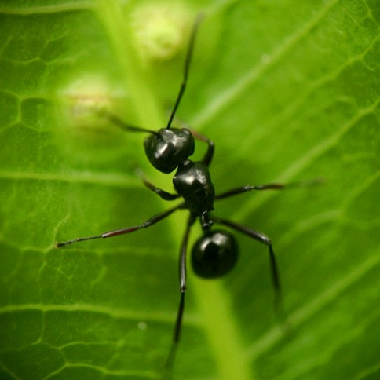
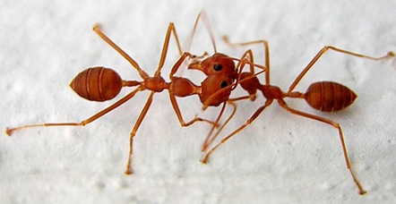

Semua Tentang Semut
Semut bisa ditemukan dimana-dimana, dan hampir ada di seluruh dunia, karena semut menurut riset hampir mendominasi habitat darat di dunia
Secara ekologi, sarang semut tersebar dari hutan bakau dan pohon-pohon di pinggir pantai hingga ketinggian 2400 m.
Mereka mudah bertahan ditempat yang tertutup seperti didalam tanah sampai di dalam lobang-lobang tembok rumah dan semut sangat peka akan hal-hal yang memiliki unsur manis hingga bangkai.
Semut sangat doyan akan segala yang manis, walaupun mereka juga memakan berbagai jenis binatang kecil dan tumbuh-tumbuhan. Makanan yang paling manis yang mereka temukan di alam bebas adalah madu dan niktar, yang mereka kumpulkan dari tumbuh-tumbuhan dan mahluk-mahluk kecil. Dengan kata lain, makanan semut sangat beragam, namun dapat diklasifikasikan ke dalam dua kelompok besar, yaitu protein dan gula. Tidak seperti semut lainnya, semut rangrang lebih menyukai protein daripada gula. Protein dapat ditemukan pada daging, ikan, ayam, tikus dan serangga. Untuk seberapa sering semut makan, para peneliti memperkirakan semut bisa memakan lebih dari hewan lainnya selama periode observasi 24 jam. Dan semut dapat memakan makanan dalam jumlah yang sangat banyak. Karena semut dapat mengangkat makanan beberapa kali lebih berat dari yang bisa dibawa seekor semut. Berdasarkan pengamatan, ditemukan bahwa jika semut bekerja sama, mereka dapat mengangkat beban seberat 5.000 kali berat yang dapat diangkat seekor semut pekerja. Seratus ekor semut dapat membawa seekor cacing besar di atas tanah dan bergerak dengan kecepatan 0,4 cm per detik.
Semut akan lebih memilih untuk mencari jalan tercepat daripada jalan terpendek untuk mendapatkan makanan. Para semut akan menghindari jalanan yang akan membutuhkan energi berlebih ketika harus mengangkut sumber makanan ke dalam sarangnya walaupun jarak tersebut relatif pendek.Seperti contohnya, para semut menghindari jalanan yang bertekstur dan lebih memilih jalanan yang datar untuk bolak-balik dalam mengumpulkan makanan.
Untuk melindungi diri, semut akan meninggalkan bau di sekitarnya, sehingga anggota koloni lain tidak dapat menemukan makanan itu melalui penciuman.
Sama seperti serangga tingkat tinggi lainnya, semut juga membutuhkan tidur. Terkadang semut tidur pada waktu siang. Jumlah rata-rata waktu tidur yang dibutuhkan semut mencapai sekitar 3 jam.
Pembiakan sel telur menjadi anakan semut memang diemban oleh Sang Ratu, tapi yang paling berperan besar adalah para drone yang memiliki tugas kawin dengan ratu. Pejantan ini berkembang dari telur yang tidak dibuahi dengan tujuan membuat keturunan. Selain menjadi pejantan, biasanya telur-telur ini akan menetas menjadi betina bersayap yang kelak akan menjadi ratu dalam sebuah koloni semut. Walter Tschinkel, peneliti semut dari Florida States University, menjelaskan, saat pejantan sudah siap untuk kawin, mereka akan terbang ke puncak bukit atau ke atas pohon secara berkelompok. Tujuannya adalah untuk menarik perhatian ratu koloni. Saat proses kawin, pejantan akan memasukkan alat kelaminnya, disebut aedeagus, ke saluran reproduksi betina untuk menyimpan sperma. Sang ratu akan menyimpan sperma tersebut dan mereproduksinya menjadi telur sampai sisa umurnya. Kondisi ini memungkinkan si ratu dapat bertelur beberapa kali meskipun tidak melakukan proses kawin untuk kali kedua. Sperma yang tersimpan, berfungsi dalam jangka waktu yang relatif lama.
Bernafas menggunakan lubang-lubang pernafasan yang ada di bagian dada atau yang bernama spirakel.
Rata - rata ukuran semut berkisar 2mm hingga 7mm.
Semut menyentuh serta merasakan getaran di sekitar mereka.
Semut hanya mampu hidup selama 45 hingga 60 hari saja dan tidak memiliki umur panjang.
Antara spesies semut yang berbeda, bahkan yang sama sekali pun terkadang “bertarung” dan “berperang” satu sama lain, dan peperangan ini bisa berlanjut selama beberapa jam, hari bahkan minggu.
Jika dikalkulasikan, 10% dari keseluruhan hewan di dunia merupakan semut. Dan jika ditimbang, jumlah massa semua semut di bumi sama dengan jumlah massa semua manusia di bumi
Slave-Maker ant merupakan jenis semut yang suka menggerebek sarang semut lain dan mencuri pupa mereka. Dan ketika pupa tersebut menetas, dan menjadi semut, semut tersebut kemudian dijadikan budak dalam koloni.
Dalam kepala semut terdapat organ-organ indra majemuk, besar dan kecil, untuk menangkap isyarat visual dan kimiawi yang vital bagi koloni, yang mungkin terdiri atas sejuta lebih pekerja, yang semuanya betina. Otaknya mengandung setengah juta sel saraf; matanya majemuk, antenanya berfungsi sebagai hidung dan ujung jari. Tonjolan di bawah mulut menjadi indra pengecap bulu menjadi indra peraba.
Semut berkomunikasi dengan spesien hewan lainnya melalui antena yang berfungsi sebagai hidung dan ujung jari. Semiokemikal adalah nama umum zat kimia yang digunakan semut untuk tujuan menetapkan komunikasi.
Beberapa semut diwawancara mulai menyukai acara silat, dansa dan acara yang berbau kekerasan namun memiliki unsur cinta. Naruto adalah film favorit 59% dari 81200 koloni semut yang kami wawancarai. Karakter favorit para semut adalah Sasuke yang memiliki sifat misterius dan terlihat ganteng.
Movie: Bug’s Life (1998)
Bug’s Life berkisah tentang petualangan semut bernama Flik yang berkelana meninggalkan koloninya untuk mengumpulkan para serangga lain yang bisa diajaknya mempertahankan koloninya dari kawanan belalang jahat. Belalang memperlakukan koloni semut seperti budak mereka. Beberapa periode sekali, semut harus mengumpulkan makanan untuk para belalang. Di film ini, animasi Pixar sudah lebih bagus dibanding Toy Story.
The Worlds of Our Little Friends The Ants
Apa biasanya komentar kita terhadap semut? Biasanya tidak jauh-jauh dari menjijikan, menggelikan, dan mengganggu. Untuk sebagian orang juga akan menjawab cerdas, rajin, dan semacamnya. Nah, dalam buku karangan Harun Yahya ini, pikiran kita terhadap semut akan lebih terbuka. Buku ini juga menjelaskan jenis-jenis semut, pekerjaannya, dan banyak hal.
Semut Argentina dikenal sangat tangguh diantara semut-semut lainnya di dunia. Jenis semut ini telah menyebar ke seluruh dunia, terutama melalui kapal-kapal pengirim gula dari Argentina.
5 Semut Pembunuh Paling Mematikan
Semut adalah salah satu spesies yang paling sukses di Planet ini, mereka dapat beradaptasi terhadap berbagai iklim dan lokasi di benua. Bahkan beberapa spesies berevolusi untuk mengembangkan sayap.
Semut Lebih Pintar dari Manusia?
Sebuah penelitian di Arizona State University dan Princeton University menyimpulkan bahwa semut dapat menyelesaikan tugas lebih rasional daripada manusia.
Semut Argentina dikenal sangat tangguh diantara semut-semut lainnya di dunia. Jenis semut ini telah menyebar ke seluruh dunia, terutama melalui kapal-kapal pengirim gula dari Argentina.
{kind=link}
{kind=link}
{kind=link}
{kind=link}